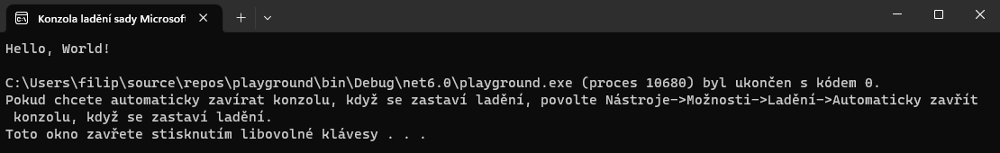

Úvod & Proměnné
V této lekci se seznámíme s proměnými a s tím jak je využívat.
První si musíme ovšem vytvořit projekt. Otevřeme si Visual Studio a klikneme na tlačítko Vytvořit nový projekt:

Poté si vybereme, jaký typ projektu budeme dělat. Zatím začneme v klasické Konzolové Aplikaci:

Nespleťte si to s konzolovou aplikací .net framework. Funkčnost je velice podobná, ale je zde potřeba řešit některé věci navíc a některé naopak nemusí fungovat stejným způsobem.
Pokud dostaneme na výběr verzi .NET rozhraní, vybereme to s dlouhodobou podporou (Long Time Support) a dáme "pokračovat".
Poté se nám spustí grafické rozhraní, kde vidíme kód. Výchozí kód by měl vypadat nějak takto:
Console.WriteLine("Hello, World!");
Tento kód můžeme spustit pomocí tlačítka nahoře:

Poté se nám spustí okno s naším programem, kde můžeme vidět nápis "Hello World!".
V tomto kódu můžeme upravit, co se má do konzole vypsat. Aby to ovšem zůstalo jako text, musí to zůstat v uvozovkách, například:
Console.WriteLine("Ahoj, Světe!");
Do tohoto kódu můžeme také napsat matematický příklad, je ovšem potřeba odstranit uvozovky, jinak to bude program brát jako text:
Console.WriteLine(1+2);
Zapisování čísel do kódu tímto způsobem je ovšem docela těžkopádné, proto využíváme tzv. proměnné.
Proměnná je věc, do které můžeme uložit nějakou hodnotu a poté s ní pracovat. Existuje spoustu typů proměnných, ukážeme si některé z nich:
int je číslo bez (desetiných míst)
string je text
Existuje jich mnohem více, ale ukážeme si je později.